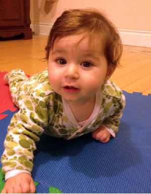
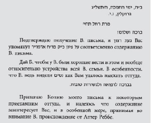

The Rebbe’s Message Was Clear: Miracles!
After the doctors ran some basic tests, they informed us that our infant daughter had been born with a rare disease found in one out of every five thousand people: The small intestine had not properly developed, and the child needed an immediate operation! “We’re talking about a one-week old baby,” I told the doctor. “I don’t want her operated on now!” However, the doctor was adamant. “This is a matter of life and death,” he said. “The operation must be done. There’s no alternative…”

The following story comes from R’ Reuven (Ruvik) Spindler, member of the Chabad community in Montreal, Canada:
Last year, on Erev Rosh Chodesh Iyar 5773, our daughter, Talia Rochel, was born in a good and auspicious hour. During those first days, my wife and I waited in the hospital as would any other happy set of parents with their newborn child, praying that they should merit bringing her to Torah, chuppa, and to good deeds.
Then, over a period of three days, we realized that our daughter’s digestive system was not functioning properly. By this time, we had already brought her home, as we nervously monitored her condition. A little more than a week after her birth, the baby’s stomach had hardened and become swollen, and we quickly ran with her back to the hospital.
THERE’S NO ALTERNATIVE, WE MUST OPERATE!
The doctors immediately did a biopsy, and after a lengthy series of tests, the first results came in. We were informed that according to the results, our daughter had been born with Hirschsprung’s disease, a rare ailment that afflicts only one out of every five thousand people. The small intestine, which has a very important role in a person’s digestive system, had not developed. There was no alternative – the child needed an immediate operation!
The doctor explained to us that this would be a most complicated surgical procedure. The intestines would be removed, retained outside her body for a period of one year. During the intervening time before rebuilding the digestive tract, we would have to learn to deal with this complex temporary situation.
“We’re talking about a one-week old baby,” I told the doctor. “I don’t want her operated on now!”
However, the doctor was adamant. “This is a matter of life and death,” he said. “The operation must be done. There’s no alternative…”
We responded that we needed time to consider the matter. In the meantime, they referred us to a couple who had gone through a similar situation to help us deal with the new reality and teach us how to clean out the baby artificially three times a day. We returned home, anxious and extremely concerned.
The doctor asked us to give him an answer by the following day, but we were having a very difficult time making our decision. We asked for a delay of one week, while in the meantime, we continued treating our daughter’s ailment as we had been taught in the hospital.
A SECOND MEDICAL OPINION
I wrote to the Rebbe, asking for a bracha and advice on what we should do. I opened a volume of Igros Kodesh, but I saw no advice in connection to our situation. I asked my mashpia, and he said that in medical matters, the Rebbe always instructed people to get a second opinion from another doctor.
We went to see a Dr. Le Barch, a specialist in Montreal. He looked at all the previous test results and told us, “They did a biopsy on her, and in 99% of the cases, the results produced by the biopsy are proven accurate. In other words, there’s no room for mistakes. You have to do the operation.” I went back to my mashpia after we heard the second opinion. “If so,” he said, “that’s what you have to do…”
We sought the advice of the Refua V’Chesed organization in Montreal. They told us that Dr. Le Barch is an expert specialist in such cases, and they recommended that he should do the surgery. We spoke with him, and he naturally relied on the tests made by the first doctor. While he checked the results himself during our meeting, nevertheless, I asked him to run another series of tests.
He told us that there was no point in doing further tests. As a result, we decided together that we should set a date for the procedure, as it would be far easier to cancel, if necessary, as opposed to getting another appointment. “In the meantime,” the doctor said, “although I think that it’s totally unnecessary, I’ll arrange for another series of tests so you’ll be calm about it…” We set a date for the operation and went home.
THE OPERATION DATE IS SET, THE REBBE GIVES A BLESSING FOR A MIRACLE
The night before the operation, we sat with tears in our eyes as we wrote to the Rebbe that we didn’t want our daughter to have this operation. As I mentioned earlier, this was no simple procedure, and the baby was only three weeks old. In short, we asked for a bracha that everything should work out and this nightmare should come to an end.
I took Volume 28 of Igros Kodesh and opened the seifer to Letter #10,630. This was a correspondence written entirely in Russian, except for just a few words in Hebrew. It was addressed to someone named Rochel. We were immediately overcome, as our daughter’s name is Talia Rochel.

We jumped with excitement. ”It doesn’t matter what’s written in Russian,” we said. “The Rebbe surely wanted us to see what was written in Hebrew…” We went to sleep, as we tried to remove all worry from our hearts and trust in the Rebbe’s bracha.
THE PRE-OP BEGINS…
The following morning, we arrived at the hospital with our suitcases packed with clothes for a week, as we went to organize the room we had been assigned. They took the baby and began the routine process of preparing her for the operation. They proceeded to clean out the digestive tract, while the anesthetist started connecting our daughter to the oxygen in the final pre-op stage. Suddenly, the surgeon ran into the operating room and cried, “Stop! Stop!”
The surgical team was stunned. “What do you mean, ‘Stop’? There’s no need to operate?”
“I’m waiting for a lab report on another series of tests we conducted,” he declared. “Wait ten minutes.”
We sat for ten minutes, which seemed to us like an eternity. We felt as if we were sitting on pins and needles… Finally, the results arrived:
They were positive. Our daughter doesn’t have the disease at all. There really was no need to operate…
According to the medical staff, the first doctor had made a colossal error, and they had no idea how he had reached his conclusions. “There are two possibilities,” they said. “Either he dozed off during the examination or he had mistakenly switched your daughter’s test results with someone else’s…”
Later, as a result of his desire to subject a one-week old baby to an unnecessary operation, the original doctor had his license revoked in the United States and Canada for a period of six months…
THANKS TO THE NASI
Of course, we knew that there was a third possibility – and that this was surely the correct one. It was as the Rebbe had written: “Miracles. With a blessing for a recovery and for good news…”
The doctors said that the new test results showed our daughter had merely developed an allergy to the protein found in dairy products, and this is what was causing the blockage in her digestive system.
They cleaned out her intestines, gave my wife a strict diet for our daughter to maintain, and thank G-d, everything has been fine since then.
Thanks to Alm-ghty G-d, and thanks to the Moshe Rabbeinu of our generation, the Rebbe, Melech HaMoshiach!
Brook. "The Rebbe’s Message Was Clear: Miracles!." Beis Moshiach, no. 918 (March 5, 2014).